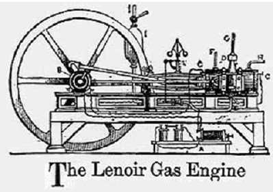
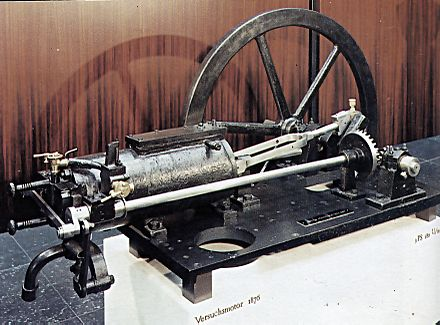

Первые попытки создания ДВС
Многие ученые и инженеры внесли свой вклад в разработку двигателей внутреннего сгорания. В 1791 году Джон Барбер изобрел газовую турбину. В 1794 году Томас Мид запатентовал созданный Джоном Барби оранжевый и газовый двигатель. В том же 1794 году Роберт Стрит запатентовал двигатель внутреннего сгорания на жидком топливе и построил рабочий прототип. В 1807 году французский инженер Нисефор Ньепс запустил экспериментальный твердотопливный двигатель внутреннего сгорания, который использовал в качестве топлива измельченный в порошок пиреолофор. В 1807 году французский изобретатель Франсуа Исаак де Риваз построил первый поршневой двигатель, называемый часто двигателем де Риваза. Двигатель работал на газообразном водороде, имея элементы конструкции, с тех пор вошедшие в последующие прототипы ДВС: поршневую группу и искровое зажигание. Кривошипно-шатунного механизма в конструкции двигателя ещё не было.
Газовый двигатель Лебона
В 1799 году французский инженер Филипп Лебон открыл светильный газ и получил патент на использование и способ получения светильного газа путём сухой перегонки древесины или угля. Это открытие имело огромное значение, прежде всего для развития техники освещения. Очень скоро во Франции, а потом и в других странах Европы газовые лампы стали успешно конкурировать с дорогостоящими свечами. Однако светильный газ годился не только для освещения. Изобретатели взялись за конструирование двигателей, способных заменить паровую машину, при этом топливо сгорало бы не в топке, а непосредственно в цилиндре двигателя.
В 1801 году Лебон взял патент на конструкцию газового двигателя. Принцип действия этой машины основывался на известном свойстве открытого им газа: его смесь с воздухом взрывалась при воспламенении с выделением большого количества теплоты. Продукты горения стремительно расширялись, оказывая сильное давление на окружающую среду. Создав соответствующие условия, можно использовать выделяющуюся энергию в интересах человека. В двигателе Лебона были предусмотрены два компрессора и камера смешивания. Один компрессор должен был накачивать в камеру сжатый воздух, а другой — сжатый светильный газ из газогенератора. Газовоздушная смесь поступала потом в рабочий цилиндр, где воспламенялась. Двигатель был двойного действия, то есть попеременно действовавшие рабочие камеры находились по обе стороны поршня. По существу, Лебон вынашивал мысль о двигателе внутреннего сгорания, однако в 1804 году он был убит, не успев воплотить в жизнь своё изобретение[1].
Двигатель Ленуара
В последующие годы несколько изобретателей из разных стран пытались создать работоспособный двигатель на светильном газе. Однако все эти попытки не привели к появлению на рынке двигателей, которые могли бы успешно конкурировать с паровой машиной. Честь создания коммерчески успешного двигателя внутреннего сгорания принадлежит бельгийскому механику Жану Этьену Ленуару. Работая на гальваническом заводе, Ленуар пришёл к мысли, что топливовоздушную смесь в газовом двигателе можно воспламенять с помощью электрической искры, и решил построить двигатель на основе этой идеи. Мощность первого практически пригодного двухтактного газового ДВС, сконструированного Ленуаром в 1860 году, составляла 8,8 кВт (11,97 л. с.). Двигатель представлял собой одноцилиндровую горизонтальную машину двойного действия, работавшую на смеси воздуха и светильного газа с электрическим искровым зажиганием от постороннего источника и золотниковым газораспределением. В конструкции двигателя появился кривошипно-шатунный механизм. КПД двигателя не превышал 4,65 %. Несмотря на недостатки, двигатель Ленуара получил некоторое распространение. Использовался как лодочный двигатель.
Двигатель Отто
Познакомившись с двигателем Ленуара, осенью 1860 года выдающийся немецкий конструктор Николаус Аугуст Отто с братом построили копию газового двигателя Ленуара и в январе 1861 года подали заявку на патент на двигатель с жидким топливом на основе газового двигателя Ленуара в Министерство коммерции Пруссии, но заявка была отклонена. В 1863 году создал двухтактный атмосферный двигатель внутреннего сгорания. Двигатель имел вертикальное расположение цилиндра, зажигание открытым пламенем и КПД до 15 %. Вытеснил двигатель Ленуара.
Четырёхтактный двигатель Отто 1876 года
В 1864 году он получил патент на свою модель газового двигателя и в том же году заключил договор с богатым инженером Лангеном для эксплуатации этого изобретения. Вскоре была создана фирма «Отто и Компания». В 1876 году Николаус Август Отто построил более совершенный четырёхтактный газовый двигатель внутреннего сгорания.
На первый взгляд, двигатель Отто представлял собой шаг назад по сравнению с двигателем Ленуара. Цилиндр был вертикальным. Вращаемый вал помещался над цилиндром сбоку. Вдоль оси поршня к нему была прикреплена рейка, связанная с валом. Двигатель работал следующим образом. Вращающийся вал поднимал поршень на 1/10 высоты цилиндра, в результате чего под поршнем образовывалось разрежённое пространство и происходило всасывание смеси воздуха и газа. Затем смесь воспламенялась. Ни Отто, ни Ланген не владели достаточными знаниями в области электротехники и отказались от электрического зажигания. Воспламенение они осуществляли открытым пламенем через трубку. При взрыве давление под поршнем возрастало примерно до 4 атм. Под действием этого давления поршень поднимался, объём газа увеличивался и давление падало. При подъёме поршня специальный механизм отсоединял рейку от вала. Поршень сначала под давлением газа, а потом по инерции поднимался до тех пор, пока под ним не создавалось разрежение. Таким образом, энергия сгоревшего топлива использовалась в двигателе с максимальной полнотой. В этом заключалась главная оригинальная находка Отто. Рабочий ход поршня вниз начинался под действием атмосферного давления, и после того, как давление в цилиндре достигало атмосферного, открывался выпускной вентиль, и поршень своей массой вытеснял отработанные газы. Из-за более полного расширения продуктов сгорания КПД этого двигателя был значительно выше, чем КПД двигателя Ленуара и достигал 15 % (до 22%?[2]), то есть превосходил КПД самых лучших паровых машин того времени[3].
Поскольку двигатели Отто были почти в пять раз экономичнее двигателей Ленуара, они сразу стали пользоваться большим спросом. В последующие годы их было выпущено около пяти тысяч. Отто упорно работал над усовершенствованием их конструкции. Вскоре зубчатую рейку заменила кривошипно-шатунная передача. Но самое существенное из его изобретений было сделано в 1877 году, когда Отто получил патент на новый двигатель с четырёхтактным циклом. Этот цикл по сей день лежит в основе работы большинства газовых и бензиновых двигателей. В следующем году новые двигатели уже были запущены в производство.
Четырёхтактный цикл был самым большим техническим достижением Отто. Но вскоре обнаружилось, что за несколько лет до его изобретения точно такой же принцип работы двигателя был описан французским инженером Бо де Роша. Группа французских промышленников оспорила в суде патент Отто. Суд счёл их доводы убедительными. Права Отто, вытекавшие из его патента, были значительно сокращены, в том числе было аннулировано его монопольное право на четырёхтактный цикл.
Хотя конкуренты наладили выпуск четырёхтактных двигателей, отработанная многолетним производством модель Отто всё равно была лучшей, и спрос на неё не прекращался. К 1897 году было выпущено около 42 тысяч таких двигателей разной мощности. Однако то обстоятельство, что в качестве топлива использовался светильный газ, сильно сужало область применения первых двигателей внутреннего сгорания (невозможность применения на транспорте ввиду громоздкости баллонов и трудностей заправки). Количество светильногазовых заводов было незначительно даже в Европе, а в России их вообще было только два - в Москве и Петербурге.
Поэтому не прекращались поиски нового горючего для двигателя внутреннего сгорания. Некоторые изобретатели пытались применить в качестве газа пары жидкого топлива. Ещё в 1872 году американец Брайтон пытался использовать в этом качестве керосин. Однако керосин плохо испарялся, и Брайтон перешёл к более лёгкому нефтепродукту — бензину. Но для того, чтобы двигатель на жидком топливе мог успешно конкурировать с газовым, необходимо было создать специальное устройство для испарения бензина и получения горючей смеси его с воздухом. Брайтон в том же 1872 году придумал один из первых так называемых «испарительных» карбюраторов, но он действовал неудовлетворительно.